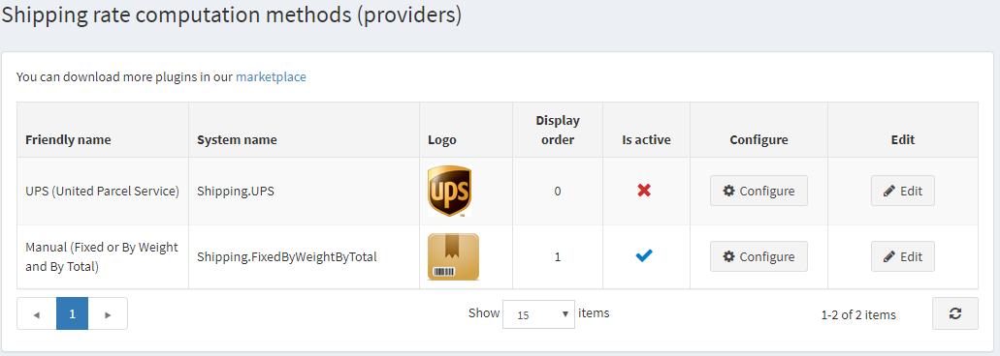

How to code my shipping rate computation method
If customers have some shippable products, they can choose a shipping option during checkout. These shipping options are returned from shipping rate computation methods (such as UPS, USPS, FedEx, etc). Shipping rate computation methods are implemented as plugins in nopCommerce. We recommend you read How to write a plugin for nopCommerce 4.60 before you start coding a new shipping rate computation method. The article will explain to you the required steps for creating a plugin. So actually a shipping rate computation method is an ordinary plugin that implements an IShippingRateComputationMethod interface (Nop.Services.Shipping namespace). So add a new shipping plugin project (class library) to the solution and let's get started.
Controllers, views, models
Add a controller and an appropriate Configure action method and a view. These will define how a store owner sees configuration options in the admin panel System → Configuration → Shipping → Shipping providers. This article does not explain how to configure plugins, but you can find more info about it here.

Once this step is complete, you can start adding the required business logic for getting shipping options.
Getting shipping options
Now you need to create a class that implements the IShippingRateComputationMethod interface. This is the class that will be doing all the actual work. When nopCommerce calculates shipping totals or needs to get a list of available shipping options, the GetShippingOptionsAsync or GetFixedRateAsync methods of your class will be called. Here is how UPSComputationMethod class is defined ("UPS" method):
public class UPSComputationMethod : BasePlugin, IShippingRateComputationMethod
IShippingRateComputationMethod interface has several methods and properties which are required to implement.
- GetShippingOptionsAsync. This method is always invoked when a customer chooses a shipping option during checkout. This method returns
GetShippingOptionResponsewhich contains a list of ShippingOption objects. Each ShippingOption object contains information about certain shipping options such as option name (for example, "By ground"), its rate (for example, 10 USD), and other information. Put all your logic here (get the rates from your database or request them from a third-party site such as UPS). - GetFixedRateAsync. As you already know GetShippingOptionsAsync is used to get shipping options during checkout (on the "Select shipping method" page). But sometimes we need to know a shipping rate before a shipping option is chosen (for example, on the shopping cart page). In this case, you can return a fixed rate. For example, your shipping rate computation method provides only one shipping option, and there's no need to wait until the customer chooses it on the "Select shipping method" page. Return will be
nullif your fixed rates are not supported. In this case, customers will see the following message besides "Shipping total" on the shopping cart: "Calculated during checkout". - GetShipmentTrackerAsync. This method is used to get the associated shipping tracker. As a result, an IShipmentTracker is passed which contains the URL of the page to display the tracking information (third party tracking page) as well as all information about the shipment events.
Conclusion
Hopefully, this will get you started with adding a new shipping rate computation method.